install.packages("gapminder") CSSS 508 • Lecture 2
Visualizing Data
Victoria Sass
October 10, 2023
Previously on…
Last time, we learned about:
- R and RStudio
- Quarto headers, syntax, and chunks
- Basics of functions, objects, and vectors
- Dataframes and basic plots
Today, we will cover:
- Useful coding tips: packages, directories, and saving data
- Basics of ggplot: layers and aesthetics
- Advanced ggplot tools
Useful Coding Tips
Packages
Packages are collections of functions and tools that make your life easier! The best part of R is the huge number of user-created packages. The Packages tab in the bottom-right pane of RStudio lists your installed packages.
To install a new package in R, run the line of code:
We always install packages in the console, because we only want to do it once
Loading Packages
Installing a packages does not mean it’s loaded in our R session. To do so, we call the package:
NOTE: Use quotes when installing packages, but not when loading packages!
We need to run this code every time we open a new R session: Where should we put this code?
Answer: In qmd files, and not the console!
Saving Files
You can save an R object on your computer as a file to open later:
save(new.object, file = "new_object.RData")You can open saved files in R as well:
load("new_object.RData")But where are these files being saved and loaded from?
Working Directories
R saves files and looks for files to open in your current working directory. You can ask R what this is:
getwd()[1] "/Users/victoriasass/Desktop/GitHub/CSSS508/Lectures/Lecture2"Similarly, we can set a working directory like so:
setwd("C:/Users/vsass/CSSS508/HW2")Don’t set a working directory in R Markdown documents! They automatically set the directory they are in as the working directory.
Managing Files
When managing R projects, it is normally best to give each project (such as a homework assignment) its own folder. I use the following system:
Every class or project has its own folder . . .
Each assignment or task has a folder inside that, which is the working directory for that item.
-
.qmdand.Rfiles are named clearly and completely
For example, this presentation is located and named this: GitHub/CSSS508/Lectures/Lecture1/CSSS508_Lecture1.qmd
You can use whatever system you want, but be consistent so your projects are organized! You don’t want to lose work by losing or overwriting files!
For large projects containing many files, I recommend using RStudio’s built in project management system found in the top right of the RStudio window.
File Types
We mainly work with three types of file in this class:
-
.qmd: These are markdown syntax files, where you write code to make documents.
-
.R: These are R syntax files, where you write code to process and analyze data without making an output document1.
-
.htmlor.pdf: These are the output documents created when you Render a quarto markdown document.
Make sure you understand the difference between the uses of these file types! Please ask for clarification if needed!
Gapminder Data
We’ll be working with data from Hans Rosling’s Gapminder project. An excerpt of these data can be accessed through an R package called gapminder, cleaned and assembled by Jenny Bryan at UBC.
Check Out Gapminder
The data frame we will work with is called gapminder, available once you have loaded the package. Let’s see its structure:
str(gapminder)tibble [1,704 × 6] (S3: tbl_df/tbl/data.frame)
$ country : Factor w/ 142 levels "Afghanistan",..: 1 1 1 1 1 1 1 1 1 1 ...
$ continent: Factor w/ 5 levels "Africa","Americas",..: 3 3 3 3 3 3 3 3 3 3 ...
$ year : int [1:1704] 1952 1957 1962 1967 1972 1977 1982 1987 1992 1997 ...
$ lifeExp : num [1:1704] 28.8 30.3 32 34 36.1 ...
$ pop : int [1:1704] 8425333 9240934 10267083 11537966 13079460 14880372 12881816 13867957 16317921 22227415 ...
$ gdpPercap: num [1:1704] 779 821 853 836 740 ...What’s Interesting Here?
-
Factor variables
countryandcontinent- Factors are categorical data with an underlying numeric representation
- We’ll spend a lot of time on factors later!
- Many observations: \(n=1704\) rows
- For each observation, a few variables: \(p=6\) columns
-
A nested/hierarchical structure:
yearincountryincontinent- These are panel data!
Basics of ggplot2
Fancier: ggplot
ggplot(data = China,
aes(x = year, y = lifeExp)) +
geom_point(color = "red", size = 3) +
xlab("Year") +
ylab("Life expectancy") +
ggtitle("Life expectancy in China") +
theme_bw(base_size=18)This ggplot is made with many functions and fewer arguments in each.
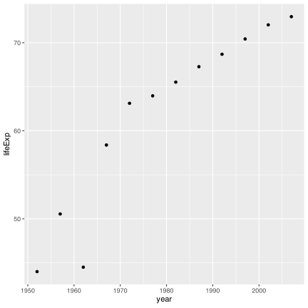
ggplot2
The ggplot2 package provides an alternative toolbox for plotting.
The core idea underlying this package is the layered grammar of graphics: we can break up elements of a plot into pieces and combine them.
ggplots are a bit harder to create, but are usually:
- prettier,
- more professional, and
- more customizable!
Layered grammar of graphics

Structure of a ggplot
ggplot graphics objects consist of two primary components:
-
Layers, the components of a graph.
- We add layers to a
ggplotobject using+. - This includes adding lines, shapes, and text to a plot.
- We add layers to a
-
Aesthetics, which determine how the layers appear.
- We set aesthetics using arguments (e.g.
color="red") inside layer functions. - This includes modifying locations, colors, and sizes of the layers.
- We set aesthetics using arguments (e.g.
Layers
Layers are the components of the graph, such as:
-
ggplot(): initializes basic plotting object, specifies input data -
geom_point(): layer of scatterplot points -
geom_line(): layer of lines -
geom_histogram(): layer of a histogram -
ggtitle(),xlab(),ylab(): layers of labels -
facet_wrap(): layer creating multiple plot panels -
theme_bw(): layer replacing default gray background with black-and-white
Layers are separated by a + sign. For clarity, I usually put each layer on a new line.
Aesthetics
Aesthetics control the appearance of the layers:
-
x,y: \(x\) and \(y\) coordinate values to use -
color: set color of elements based on some data value -
group: describe which points are conceptually grouped together for the plot (often used with lines) -
size: set size of points/lines based on some data value (greater than 0) -
alpha: set transparency based on some data value (between 0 and 1)
Examples: Basic Jargon in Action!
We’ll now build up two ggplots together that demonstrate common layers and aesthetics.
Axis Labels, Points, No Background
1: Base Plot
Axis Labels, Points, No Background
2: Scatterplot
Axis Labels, Points, No Background
3: Point Color and Size

Axis Labels, Points, No Background
4: X-Axis Label
Axis Labels, Points, No Background
5: Y-Axis Label
Axis Labels, Points, No Background
6: Title
Axis Labels, Points, No Background
7: Theme
Axis Labels, Points, No Background
8: Text Size
Plotting All Countries
We have a plot we like for China…
… but what if we want all the countries?
Plotting All Countries
1: A Mess!
Plotting All Countries
2: Lines
Plotting All Countries
3: Grouping
Plotting All Countries
4: Size
Plotting All Countries
5: Color

Plotting All Countries
6: Facets
Plotting All Countries
7: Text Size
Plotting All Countries
8: No Legend
Advanced ggplot tools
(10 minute break!)
Next, we’ll discuss:
Storing, modifying, and saving ggplots
Advanced axis changes (scales, text, ticks)
Legend changes (scales, colors, locations)
Storing Plots
We can assign a ggplot object to a name:
Afterwards, you can display or modify ggplots…
Showing a Stored Graph
lifeExp_by_yearOverriding previous specifications
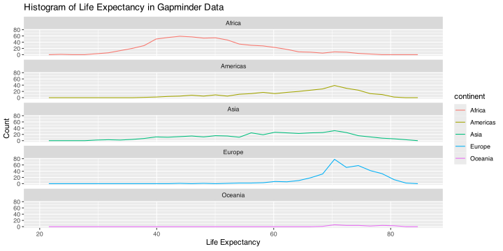Adding More Layers
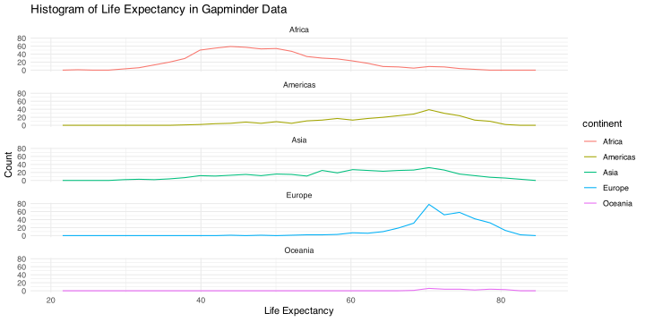Saving ggplot Plots
If you want to save a ggplot, use ggsave():
ggsave("I_saved_a_file.pdf", plot = lifeExp_by_year,
height = 3, width = 5, units = "in")If you didn’t manually set font sizes, these will usually come out at a reasonable size given the dimensions of your output file.
Changing the Axes
We can modify the axes in a variety of ways, such as:
Change the \(x\) or \(y\) range using
xlim()orylim()layersChange to a logarithmic or square-root scale on either axis:
scale_x_log10(),scale_y_sqrt()Change where the major/minor breaks are:
scale_x_continuous(breaks =, minor_breaks = )
Axis Changes
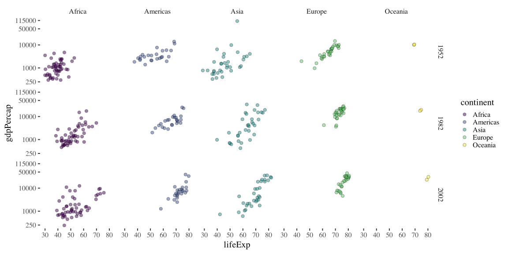Precise Legend Position
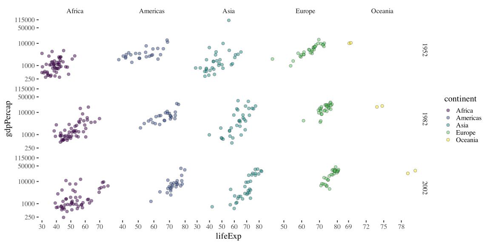Instead of coordinates, you could also use “top”, “bottom”, “left”, or “right”.
Scales for Color, Shape, etc.
Scales are layers that control how the mapped aesthetics appear.
You can modify these with a scale_[aesthetic]_[option]() layer:
-
[aesthetic]iscolor,shape,linetype,alpha,size,fill, etc.
-
[option]is something likemanual,continuousordiscrete(depending on nature of the variable).
Examples:
-
scale_linetype_manual(): manually specify the linetype for each different value -
scale_color_manual(): manually specify colors
Legend Name and Manual Colors
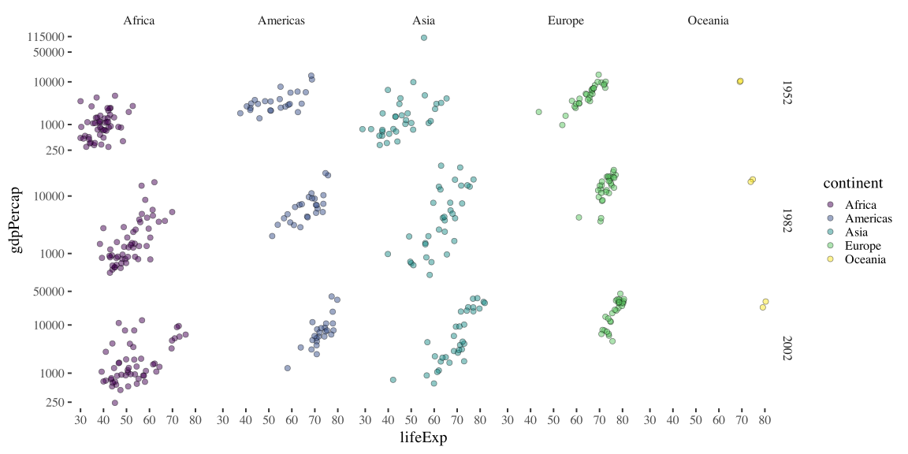Bonus: Advanced Example!
End Result
We’re going to slowly build up a really detailed plot now!
1. Base Plot
2. Lines
3. Continent Average
4. Facets
5. Color Scale
6. Size Scale
ggplot(data = gapminder, aes(x = year, y = lifeExp, group = country)) +
geom_line() +
geom_line(stat = "smooth", method = "loess",
aes(group = continent)) +
facet_wrap(~ continent, nrow = 2) +
scale_color_manual(name = "Life Exp. for:", values = c("Country" = "black", "Continent" = "blue")) +
scale_size_manual(name = "Life Exp. for:", values = c("Country" = 0.25, "Continent" = 3))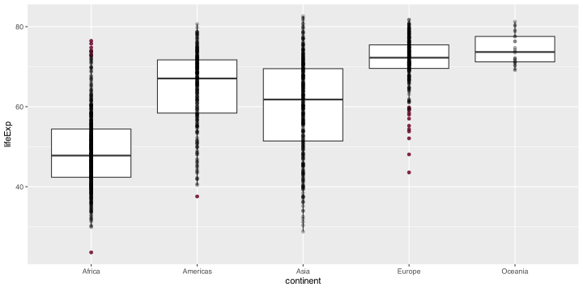
7. Alpha (Transparency)
ggplot(data = gapminder, aes(x = year, y = lifeExp, group = country)) +
geom_line(alpha = 0.5, aes(color = "Country", size = "Country")) +
geom_line(stat = "smooth", method = "loess",
aes(group = continent, color = "Continent", size = "Continent"), alpha = 0.5) +
facet_wrap(~ continent, nrow = 2) +
scale_color_manual(name = "Life Exp. for:", values = c("Country" = "black", "Continent" = "blue")) +
scale_size_manual(name = "Life Exp. for:", values = c("Country" = 0.25, "Continent" = 3))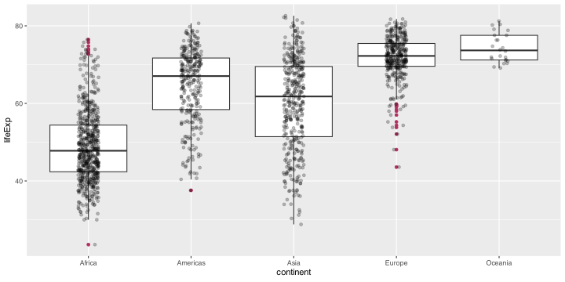
8. Theme and Labels
ggplot(data = gapminder, aes(x = year, y = lifeExp, group = country)) +
geom_line() +
geom_line(stat = "smooth", method = "loess",
aes(group = continent)) +
facet_wrap(~ continent, nrow = 2) +
scale_color_manual(name = "Life Exp. for:", values = c("Country" = "black", "Continent" = "blue")) +
scale_size_manual(name = "Life Exp. for:", values = c("Country" = 0.25, "Continent" = 3)) +
theme_minimal(base_size = 14) + ylab("Years") + xlab("")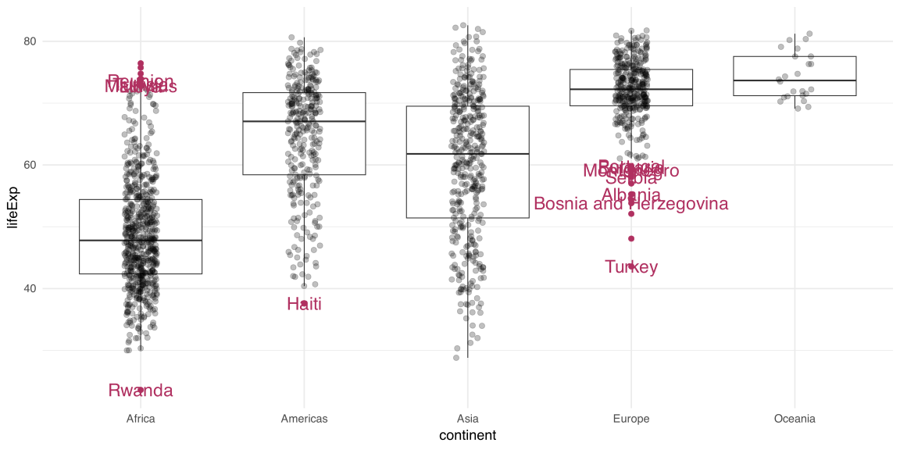
9. Title and Subtitle
ggplot(data = gapminder, aes(x = year, y = lifeExp, group = country)) +
geom_line() +
geom_line(stat = "smooth", method = "loess",
aes(group = continent)) +
facet_wrap(~ continent, nrow = 2) +
scale_color_manual(name = "Life Exp. for:", values = c("Country" = "black", "Continent" = "blue")) +
scale_size_manual(name = "Life Exp. for:", values = c("Country" = 0.25, "Continent" = 3)) +
theme_minimal(base_size = 14) + ylab("Years") + xlab("") +
ggtitle("Life Expectancy, 1952-2007", subtitle = "By continent and country")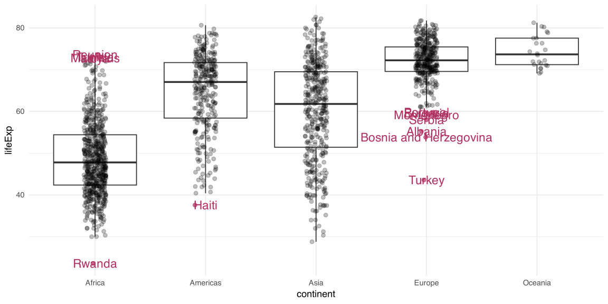
10. Angled Tick Values
ggplot(data = gapminder, aes(x = year, y = lifeExp, group = country)) +
geom_line() +
geom_line(stat = "smooth", method = "loess",
aes(group = continent)) +
facet_wrap(~ continent, nrow = 2) +
scale_color_manual(name = "Life Exp. for:", values = c("Country" = "black", "Continent" = "blue")) +
scale_size_manual(name = "Life Exp. for:", values = c("Country" = 0.25, "Continent" = 3)) +
theme_minimal(base_size = 14) + ylab("Years") + xlab("") +
ggtitle("Life Expectancy, 1952-2007", subtitle = "By continent and country") +
theme(axis.text.x = element_text(angle = 45)) 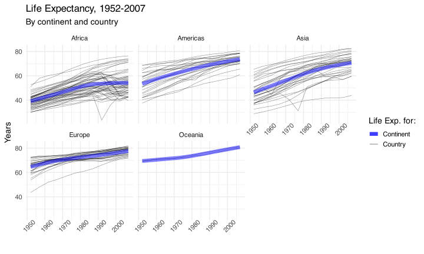
11. Legend Position
ggplot(data = gapminder, aes(x = year, y = lifeExp, group = country)) +
geom_line() +
geom_line(stat = "smooth", method = "loess",
aes(group = continent)) +
facet_wrap(~ continent, nrow = 2) +
scale_color_manual(name = "Life Exp. for:", values = c("Country" = "black", "Continent" = "blue")) +
scale_size_manual(name = "Life Exp. for:", values = c("Country" = 0.25, "Continent" = 3)) +
theme_minimal(base_size = 14) + ylab("Years") + xlab("") +
ggtitle("Life Expectancy, 1952-2007", subtitle = "By continent and country") +
theme(legend.position=c(0.82, 0.15), axis.text.x = element_text(angle = 45))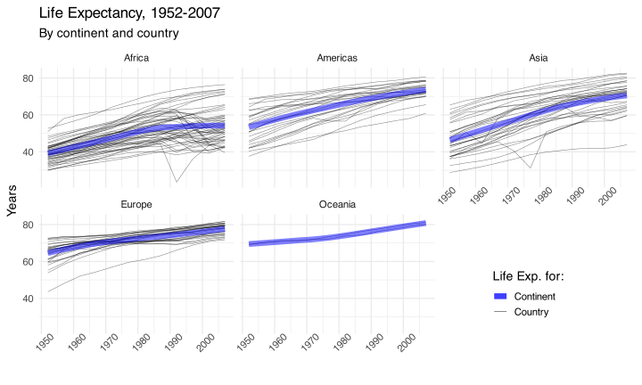
Summary
Summary
ggplot2 can do a LOT! I won’t expect you to memorize all these tools, and neither should you!
With time and practice, you’ll start to remember the key tools
When in doubt, Google it! (i.e. “R ggplot ‘whatever issue you need help with’”)
-
There are lots of great resources out there:
Kieran Healy’s book Data Visualization: A Practical Introduction (right) which is targeted at social scientists without technical backgrounds and uses the same tools we’ll be learning in this class.
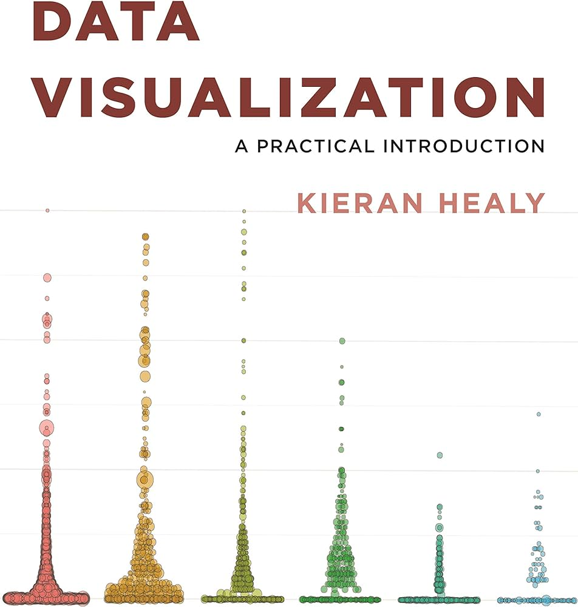
Exercise: Histograms
In pairs, you will create a histogram of life expectancy observations in the complete Gapminder dataset.
Set the base layer by specifying the data as
gapminderand the x variable aslifeExpAdd a second layer to create a histogram using the function
geom_histogram()Customize your plot with nice axis labels and a title.
Solution
1: Set Base Layer
Solution
2: Add Histogram Layer
ggplot(gapminder,aes(x=lifeExp))+
geom_histogram(bins=30)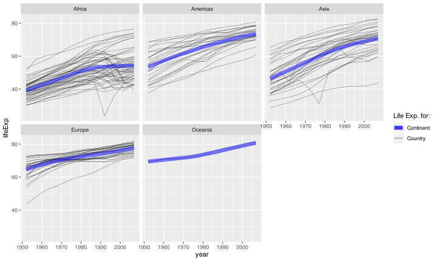
Solution
3: Add Label Layers
Homework #2
In this homework, you’ll pose a question regarding the Gapminder dataset and investigate it graphically.
- At the beginning of your document, write down a research question that is based on the Gapminder dataset (e.g., “How does population change over time in different countries?”)
- Create 3-6 plots to answer/investigate your research question. Consider histograms (
geom_histogram()), scatterplots (geom_point()), or lineplots (geom_line()). - Be sure all titles, axes, and legends are clearly labelled (no raw variable names).
- Include at least one plot with
facet_wrap()orfacet_grid(). - You can use other
geomslike histograms, bar charts, adding meaningful vertical or horizontal lines, etc. You may find this data visualization cheat sheet helpful.
Your document should be pleasant for a peer to look at, with some organization. You must write up your observations in words as well as showing the graphs. Upload both the .qmd file and the .html file to Canvas.
Due dates
- Section AA:
- Homework #1 due Tuesday, October 17th (before lecture)
- Peer grading due Sunday, October 22nd (4:30pm)
- Section AB:
- Homework #1 due Thursday, October 19th (before lab)
- Peer grading due Tuesday, October 24th (before lecture)
Comments
You may have noticed that sometimes I have written code that looks like this:
#is known as the commenting symbol in R!Anything written on the same line after
#will not be run by R.This is useful for annotating your code to remind you (or others) what you are doing in a section.1